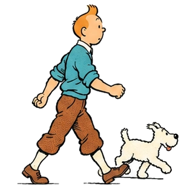

<!doctype html><html lang="fa" dir="rtl"><meta charset="utf-8"><title>دور دنیا با تن‌تن</title><style>
*{box-sizing:border-box}body{margin:0;background:#f7efdc;color:#202e37}main{position:relative;width:1080px;height:1920px;overflow:hidden;background:radial-gradient(ellipse at 38% 43%,#fff8e9,#f4e9d1)}
h1{position:absolute;top:275px;left:65px;right:65px;margin:0;text-align:center;font: bold 118px/1.45 'Noto Sans Arabic',sans-serif;direction:rtl}h1 span{display:block;color:#154e73;font-size:152px;line-height:1.32}
.globe{position:absolute;width:810px;left:135px;top:968px;transform:rotate(-14deg);filter:drop-shadow(3px 10px 5px #5946252a)}
.hero{position:absolute;left:310px;top:633px;height:428px;transform:rotate(-5deg);filter:drop-shadow(3px 4px 1px #6f604339)}
main:after{content:"";position:absolute;inset:0;opacity:.10;pointer-events:none;background-image:url("data:image/svg+xml,%3Csvg xmlns='http://www.w3.org/2000/svg' width='140' height='140'%3E%3Cfilter id='n'%3E%3CfeTurbulence type='fractalNoise' baseFrequency='.75' numOctaves='3' stitchTiles='stitch'/%3E%3C/filter%3E%3Crect width='100%25' height='100%25' filter='url(%23n)' opacity='.65'/%3E%3C/svg%3E")}
</style><main><h1>دور دنیا<span>با تن‌تن</span></h1></main></html>
